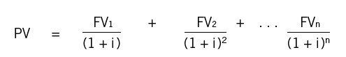
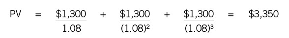
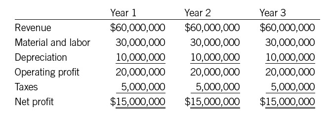
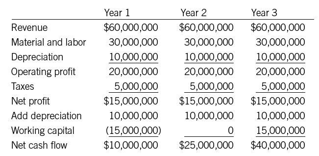

Figuring ROI
The Nitty-Gritty
Capital expenditures. Cap-ex. Capital investments. Capital budgeting. And of course, return on investment—ROI. Many companies use these terms loosely or even interchangeably, but they’re usually referring to the same thing; namely, the process of deciding what capital investments to make to improve the value of the company.
ANALYZING CAPITAL EXPENDITURES
Capital expenditures are large projects that require a significant investment of cash. Every organization defines significant differently; some draw the line at $1,000, others at $5,000 or more. Capital expenditures go toward items and projects expected to help generate revenue for more than a year. The category is broad. It includes equipment purchases, business expansions, acquisitions, and the development of new products. A new marketing campaign can be considered a capital expenditure. So can the renovation of a building, the upgrade of a computer system, and the purchase of a new company car.
Companies treat expenditures like these differently from ordinary purchases of inventory, supplies, utilities, and so on, for at least three reasons. One is that the expenditures involve large (and sometimes indeterminate) amounts of cash. A second is that they are typically expected to provide returns for several years, so the time value of money comes into play. A third is that they always entail some degree of risk. A company may not know whether the expenditure will “work”—that is, whether it will deliver the expected results. Even if it does work generally as planned, the company can’t know exactly how much cash the investment will actually help to generate.
We will outline the basic steps of analyzing capital expenditures, and then describe the three methods finance people generally use for calculating whether a given expenditure is worth making. But please: remember that this, too, is an exercise in the art of finance. It’s actually kind of amazing; financial professionals can and do analyze proposed projects and make recommendations using a host of assumptions and estimates, and the results turn out well. They even enjoy the challenge of taking these unknowns and quantifying them in a way that makes their company more successful.
With a little financial intelligence, you can contribute your own specialized knowledge to this process. We know of a company where the CFO makes a point of involving engineers and technicians in the capital budgeting process, precisely because they are likely to know more about what an investment in a steel-fabricating plant, say, will actually produce. The CFO likes to say that he’d rather teach those people a little finance than learn metallurgy himself.
So here’s how to go about it:
• Step 1 in analyzing a capital expenditure is to determine the initial cash outlay. Even this step involves estimates and assumptions: you must make judgments about what a machine or project is likely to cost before it begins to generate revenue. The costs may include purchasing equipment, installing it, allowing people time to learn to use it, and so on. Typically, most of the costs are incurred during the first year, but some may spill over into year two or even year three. All these calculations should be done in terms of cash out the door, not in terms of decreased profits.
• Step 2 is to project future cash flows from the investment. (Again, you want to know cash inflows, not profit. We’ll have more to say on this distinction later in the chapter.) This is a tricky step—definitely an example of the art of finance—both because it is so difficult to predict the future and because there are many factors that need to be taken into account. (See the toolbox at the end of this part.) Managers need to be conservative, even cautious, in projecting future cash flows from an investment. If the investment returns more than projected, everybody will be happy. If it returns significantly less, no one will be happy, and the company may well have wasted its money.
• Step 3, finally, is to evaluate the future cash flows—to figure the return on investment. Are they substantial enough so that the investment is worthwhile? On what basis can we make that determination? Finance professionals typically use three different methods—alone or in combination—for deciding whether a given expenditure is worth it: the payback method, the net present value (NPV) method, and the internal rate of return (IRR) method. Each provides different information, and each has its characteristic strengths and weaknesses.
You can see right away that most of the work and intelligence in good capital budgeting involves the estimates of costs and returns. A lot of data must be collected and analyzed—a tough job in and of itself. Then the data has to be translated into projections about the future. Financially savvy managers will understand that both of these are difficult processes, and will ask questions and challenge assumptions.
LEARNING THE THREE METHODS
To help you see these steps in action and understand how they work, we’ll take a very simple example. Your company is considering buying a $3,000 piece of equipment—a specialized computer, say, that will help one of your employees deliver a service to your customers in less time. The computer is expected to last three years. At the end of each of the three years, the cash flow from this piece of equipment is estimated at $1,300. Your company’s required rate of return—the hurdle rate—is 8 percent. Do you buy this computer or not?
Payback Method
The payback method is probably the simplest way to evaluate the future cash flow from a capital expenditure. It measures the time required for the cash flow from the project to return the original investment—in other words, it tells you how long it will take to get your money back. The payback period obviously has to be shorter than the life of the project; otherwise, there’s no reason to make the investment at all. In our example, you just take the initial investment of $3,000 and divide by the cash flow per year to get the payback period:
Since we know the machine will last three years, the payback period meets the first test: it is shorter than the life of the project. What we have not yet calculated is how much cash the project will return over its entire life.
Right there you can see both the strengths and the weaknesses of the payback method. On the plus side, it is simple to calculate and explain. It provides a quick and easy reality check. If a project you are considering has a payback period that is obviously longer than the life of the project, you probably need to look no further. If it has a quicker payback period, you’re probably justified in doing some more investigation. This is the method often used in meetings to quickly determine if a project is worth exploring.
On the minus side, the payback method doesn’t tell you much. A company doesn’t just want to break even on an investment, after all; it wants to generate a return. This method doesn’t consider the cash flow beyond breakeven, and it doesn’t give you an overall return. Nor does the method consider the time value of money. The method compares the cash outlay today with projected cash flows tomorrow, but it is really comparing cantaloupes to cabbages, because dollars today have a different value than dollars down the road.
For these reasons, payback should be used only to compare projects (so that you know which will return the initial investment sooner) or to reject projects (those that will never cover their initial investment). But remember, both numbers used in the calculation are estimates. The art in this is pulling the numbers together—how close can you come to quantifying an unknown?
So the payback method is a rough rule of thumb, not strong financial analysis. If payback looks promising, go on to the next method to see if the investment is really worth making.
Net Present Value Method
The net present value method is more complex than payback, but it’s also more powerful; indeed, it’s usually the finance professional’s first choice for analyzing capital expenditures. The reasons? One, it takes into account the time value of money, discounting future cash flows to obtain their value right now. Two, it considers a business’s cost of capital or other hurdle rate. Three, it provides an answer in today’s dollars, thus allowing you to compare the initial cash outlay with the present value of the return.
How to compute present value? As we mentioned, the actual calculation can be done on a financial calculator, your finance department’s spreadsheet, or online with one of the many available Web tools. You can also look up the answer in the present value/future value tables found in finance textbooks. But we’ll also show you what the actual formula—it’s called the discounting equation—looks like, so you can look “underneath” the result and really know what it means.
The discounting equation looks like this:

where:
PV = present value
FV = projected cash flow for each time period
i = discount or hurdle rate
n = number of time periods you’re looking at
Net present value is equal to present value minus the initial cash outlay.
For the example we mentioned, the calculation would look like this:

and
In words, the total expected cash flow of $3,900 is worth only $3,350 in today’s dollars when discounted at 8 percent. Subtract the initial cash outlay of $3,000, and you get an NPV of $350.
How should you interpret this? If the NPV of a project is greater than zero, it should be accepted, because the return is greater than the company’s hurdle rate. Here, the return of $350 shows you that the project has a return greater than 8 percent.
Some companies may expect you to run an NPV calculation using more than one discount rate. If you do, you’ll see the following relationship:
• As the interest rate increases, NPV decreases.
• As the interest rate decreases, NPV increases.
This relationship holds because higher interest rates mean a higher opportunity cost for funds. If a treasurer sets the hurdle rate at 20 percent, it means she’s pretty confident she can get almost that much elsewhere for similar levels of risk. The new investment will have to be pretty darn good to pry loose any funds. By contrast, if she can get only 4 percent elsewhere, many new investments may start to look good. Just as the Federal Reserve stimulates the national economy by lowering interest rates, a company can stimulate internal investment by lowering its hurdle rate. (Of course, it may not be wise policy to do so.)
One drawback of the NPV method is that it can be hard to explain and present to others. Payback is easy to understand, but net present value is a number that’s based on the discounted value of future cash flows—not a phrase that trips easily off the nonfinancial tongue. Still, a manager who wants to make an NPV presentation should persist. Assuming that the hurdle rate is equal to or greater than the company’s cost of capital, any investment that passes the net present value test will increase shareholder value, and any investment that fails would (if carried out anyway) actually hurt the company and its shareholders.
Another potential drawback—the art of finance, again—is simply that NPV calculations are based on so many estimates and assumptions. The cash flow projections can only be estimated. The initial cost of a project may be hard to pin down. And different discount rates, of course, can give you radically different NPV results. Still, the more you understand about the method, the more you can question somebody else’s assumptions—and the easier it will be to prepare your own proposals, using assumptions that you can defend. Your financial intelligence also will be clear to others—your boss, your CEO, whoever—when you present and explain NPV in a meeting to discuss a capital expenditure. Your understanding of the analysis will allow you to explain with confidence why the investment should be made, or why it should not.
Internal Rate of Return Method
Calculating internal rate of return is similar to calculating net present value, but the variable is different. Rather than assuming a particular discount rate and then inspecting the present value of the investment, IRR calculates the actual return provided by the projected cash flows. That rate of return can then be compared with the company’s hurdle rate to see if the investment passes the test.
In our example, the company is proposing to invest $3,000, and it will receive $1,300 in cash flow at the end of each of the following three years. You can’t just use the gross total cash flow of $3,900 to figure the rate of return, because the return is spread out over three years. So we need to do some calculations.
First, here’s another way of looking at IRR: it’s the hurdle rate that makes net present value equal to zero. Remember, we said that as discount rates increase, NPV decreases? If you did NPV calculations using a higher and higher interest rate, you’d find NPV getting smaller and smaller until it finally turned negative, meaning the project no longer passed the hurdle rate. In the preceding example, if you tried 10 percent as the hurdle rate, you’d get an NPV of about $212. If you tried 20 percent, your NPV would be negative, at –$218. So the inflection point, where NPV equals zero, is somewhere between 10 percent and 20 percent. In theory, you could keep narrowing in until you found it. In practice, you can just use a financial calculator or a Web tool, and you will find that the point where NPV equals zero is 14.36 percent. That is the investment’s internal rate of return.
IRR is an easy method to explain and present, because it allows for a quick comparison of the project’s return to the hurdle rate. On the downside, it does not quantify the project’s contribution to the overall value of the company, as NPV does. It also does not quantify the effects of an important variable, namely how long the company expects to enjoy the given rate of return. When competing projects have different durations, using IRR exclusively can lead you to favor a quick-payback project with a high-percentage return when you should be investing in longer-payback projects with lower-percentage returns. IRR also does not address the issue of scale. For example, an IRR of 20 percent does not tell you anything about the dollar size of the return. It could be 20 percent of $1 or 20 percent of $1 million. NPV, by contrast, does tell you the dollar amount. When the stakes are high, in short, it may make sense to use both IRR and NPV.
COMPARING THE THREE METHODS
We’ve been hinting at two lessons here. One is that the three methods we have reviewed may lead you to different decisions, depending on which one you rely on. The other is that the NPV method is the best choice when the methods conflict. Let’s take another example and see how the differences play out.
Assume again that your company has $3,000 to invest. (Keeping the numbers small makes the calculations easier to follow.) It also has three different possible investments in different types of computer systems, as follows:
• Investment A: Returns cash flow of $1,000 per year for three years
• Investment B: Returns cash flow of $3,600 at the end of year one
• Investment C: Returns cash flow of $4,600 at the end of year three
The required rate of return—the hurdle rate—in your company is 9 percent, and all three investments carry similar levels of risk. If you could select only one of these investments, which would it be?
The payback method tells us how long it will take to get back the initial investment. Assuming the payback occurs at the end of each year, here is how it turns out:
• Investment A: Three years
• Investment B: One year
• Investment C: Three years
By this method alone, investment B is the clear winner. But if we run the calculations for net present value, here is how they turn out:
• Investment A: –$469 (negative!)
• Investment B: $303
• Investment C: $552
Now investment A is out, and investment C looks like the best choice. What does the internal rate of return method say?
• Investment A: 0 percent
• Investment B: 20 percent
• Investment C: 15.3 percent
Interesting. If we went by IRR alone, we would choose investment B. But the NPV calculation favors C—and that would be the correct decision. As NPV shows us, investment C is worth more in today’s dollars than investment B.
The explanation? While B pays a higher return than C, it only pays that return for one year. With C we get a lower return, but we get it for three years. And three years at 15.3 percent is better than one year at 20 percent. Of course, if you assume you could keep on investing the money at 20 percent, then B would be better—but NPV can’t take into account hypothetical future investments. What it does assume is that the company can go on earning 9 percent on its cash. Even so, if we take the $3,600 that investment B gives us at the end of year one and reinvest it at 9 percent, we still end up with less at the end of year three than we would get from investment C.
So it always makes sense to use NPV calculations for your investment decisions, even if you sometimes decide to use one of the other methods for discussion and presentation.
PROFITABILITY INDEX
The profitability index (PI) is a tool used to compare capital investments. Every company, after all, has limited capital. Most could invest that capital in a variety of different ways, and each investment would probably require a different amount of money. Calculating a PI helps you see which investments are likely to be most valuable to the business.
To calculate the PI, we first must perform NPV calculations for each investment. Then we take the net present value and add back the initial investment itself to get the present value. In our three examples, each required an initial investment of $3,000. Investment A had a net present value of –469 and a present value of $2,531. Investment B’s NPV was $303, and its present value $3,303. For investment C the figures are $552 and $3,552, respectively. To convert these NPV results to a profitability index, just take the present value and divide by the initial investment. The calculations look like this:
• Investment A’s PI is $2,531 divided by $3,000, or 0.84.
• Investment B’s PI is $3,303 divided by $3,000, or 1.10.
• Investment C’s PI is $3,552 divided by $3,000, or 1.18.
In other words, investment A pays $.84 in present dollars for every dollar invested. Investment B pays $1.10, and investment C pays $1.18. The index makes it possible to rank-order investments by their PI value—particularly useful when you are looking at opportunities requiring different levels of investment. One investment may carry a higher NPV than another, but if it costs more than the alternative, you don’t have an accurate comparison. The PI solves this problem.
THE HARD PART
The key to useful ROI analysis—and the most difficult part of any method—is to make good estimates of the future benefits of an investment. It is where the real challenge lies and where the most common mistakes are made. Even big companies find this hard. Just look at the number of acquisitions or other major investments that don’t pay off. These bad investments almost always reflect unrealistic projections of the project’s future economic benefits.
How can you avoid making mistakes of this sort? The most important thing to remember is that your focus should be on cash flow, not on future profits. Maintaining this focus requires an additional analytic step when you are making projections, but the extra effort is worth it.
Let’s consider an example—and since you’re now more familiar with capital expenditure analysis, we’ll use numbers more like those you would encounter in the real world (though still simplified). You have an opportunity to build a new plant that will increase your business’s production capacity for three years. The plant costs $30 million and will last for four years (we’ll continue to keep the time frames short for purposes of illustration). It will produce enough new product to generate $60 million in additional revenue in each of the next three years.
The projected incremental income statement for the project might look something like this:

It looks like a good project, doesn’t it? You invest $30 million and get a profit of $45 million over three years. But we have deliberately omitted a critical point. The example compares profit from the project to cash that was invested. As you’ll remember from earlier chapters, profit is not the same as cash. Comparing a profit return to a cash investment is like comparing nectarines to bananas.
Typically, you need two steps to get from operating profit to cash. First you must add back any noncash expenses. Depreciation, for instance, is a noncash expense that lowers profit but does not affect cash flow. Second, you must consider the additional working capital. More sales will require more inventory and will lead to more accounts receivable—two key elements of working capital. Both of these investments will have to be financed with cash.
So let’s assume that this new increase in sales will require you to sell to new customers that have poorer credit ratings than your current customers. Perhaps it will take sixty days to collect from these customers instead of forty-five days. Perhaps you will need to increase your accounts receivable by, say, $10 million during these three years. Meanwhile, assume that your inventory will need to increase by $5 million to cover the additional sales. (The finance people can estimate all these numbers with some precision on the basis of your past financials; for the purposes of this example, we’re merely assuming what they will be.)
To convert the profit to cash flow, the calculation would look as follows:

Now the project looks much more appealing. The calculations suggest that the $30 million investment will return $75 million over three years. Of course, you still need to apply net present value analysis to see if this investment makes sense for the business.
Remember the devil is in the details in ROI analysis. Anyone can make the projections look good enough so that the investment seems to make sense. Often it makes sense to do a sensitivity analysis—that is, check the calculations using future cash flows that are 80 percent or 90 percent of the original projections, and see if the investment still looks good. If it does, you can be more confident that your calculations are leading you to the right decision.
This chapter, we know, has involved a lot of calculating. But sometimes you’d be surprised at how intuitive the whole process can be. Not long ago, Joe was running a financial review meeting at Setpoint. A senior manager in the company was suggesting that Setpoint invest $80,000 in a new machining center so that it could produce certain parts in-house rather than relying on an outside vendor. Joe wasn’t wild about the proposal for several reasons, but before he could speak up, a shop assembly technician asked the manager the following questions:
• Did you figure out the monthly cash flow return we will get on this new equipment? Eighty thousand dollars is a lot of money!
• Do you realize that we are in the spring, and the business is typically slow, and cash is tight during the summer?
• Have you figured in the cost of labor to run the machine? We are all pretty busy in the shop; you will probably have to hire someone to run this equipment.
• And are there better ways we could spend that cash to grow the business?
After this grilling, the manager dropped the proposal. The assembly technician might not have been an expert in net present value calculations, but he sure understood the concepts.
Intuition is great when it works. If you can make decisions (or challenge someone else’s proposal) on gut feel, as the technician did, go ahead. With larger or more complex projects, however, intuition isn’t sufficient; you need solid analysis as well. That’s when you need the concepts and procedures outlined in this chapter.